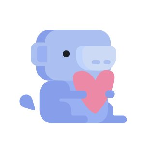
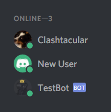
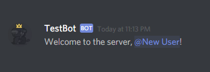

Powering Up!
It's time we finally gave our bot the ability to do more interesting things. Let's recap what code we have for our bot so far:
const token = 'Mjg1NjcyNzQyNjE4MDA1NTA1.C5VnvQ.WWB9vcbser1wU37LCqtGxws49wk';
const Discord = require('discord.js');
const Bot = new Discord.Client();
Bot.login(token);
Bot.on('ready', function()
{
console.log("TestBot is online!");
});
Inside of the function passed to the 'ready' event listener, let's store the general text channel within our server inside a variable named "General". This will make it easy for us to send messages to the specific channel with the bot. To do so, create a new variable called "General" and change that function to look like this:
var General;
Bot.on('ready', function()
{
console.log("TestBot is online!");
General = Bot.guilds.find('name', 'TestServer').channels.find('name', 'general');
console.log(General);
});
Let's unpack what we've stored inside of the "General" variable. We've accessed the guilds property of our bot, and found the guild named "TestServer" that was stored inside of the bot's guilds. As you may have guessed, a guild is another name for a Discord server. Then we accessed the channels property of TestServer, and found the general channel. This is what was stored inside of "General". After running TestBot.js again, you should find the general channel's properties, such as the type of channel that it is or the channel's id, was logged to the console.
Let's do something with that general channel. We want our TestBot to greet new users to our server in order to create a warm, welcoming environment that will make people want to stay as a member. In order to do so, we'll make another event listener like the one below:
Bot.on('guildMemberAdd', function(member)
{
General.sendMessage('Welcome to the server, ' + member + '!');
});
This particular event listener is waiting for the "guildMemberAdd" event, which is what is emitted when a user joins the server. It then passes a GuildMember object (the new user) to a callback function. Inside the function, the sendMessage method (which, along with several other channel methods, isn't listed in the documentation) of the general text channel we stored in the "General" variable is used to send a message to that channel, personally welcoming the new user:
That's pretty snazzy. Next let's make a command that's slightly more complicated to implement.